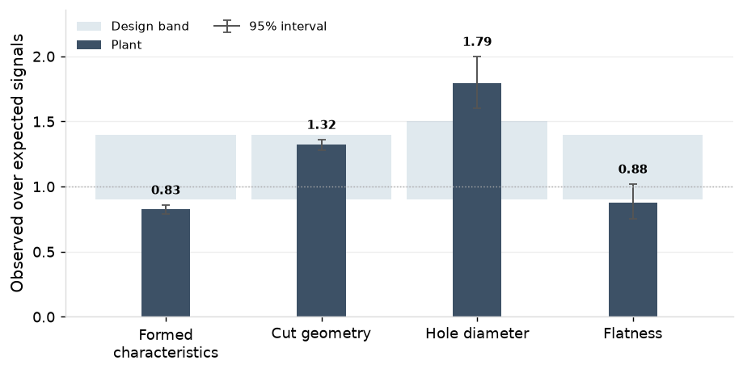
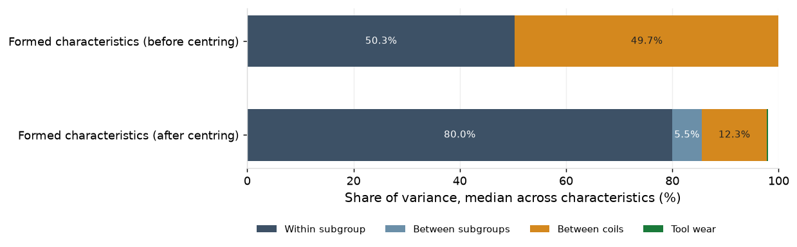
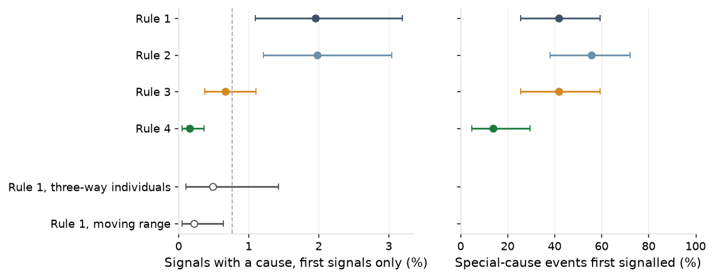
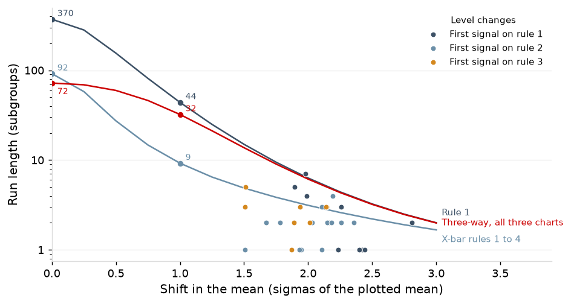

1. Executive Summary
This report revalidates the plant's SPC chart design on the 1 July 2025 to 30 June 2026 record: 1,427 active SPC charts on 11 presses, 1,380 on part characteristics and 47 on press tonnage, 379,677 subgroups and 90.9 million production strokes. It asks three questions of the charts, in Sections 2 to 4: what is charted and on what chart type; how each chart's type and limits follow from where its variation lies and how the limits are set, held and verified; and whether each chart signalled when the process changed and stayed quiet when it did not. The per-stroke tonnage charts are taken through the same three questions alongside the characteristic charts. Performance is tested by comparing each chart's signals with the rate its own rules and baseline size predict on an unchanged process, on intervals with no special cause, so a chart type on the wrong variance structure shows as a rate far from expectation. Variation is tested by decomposing each class into within-subgroup, between-subgroup, between-coil and wear components and checking the chart type against where the variance lies.
The chart selection holds. Every signal with a special cause was traced to it, each by the chart designed for it, and every alarm was closed by 30 June: 1,657 routine alarms on 58 runs with a cause found, one soft coil, one mislogged sharpening and 427 die and punch events stopped on the stroke (Table 3). On intervals with no special cause the charts signalled close to their design rate, with two departures for reasons the record shows: regression charts above expectation on level changes at sharpening that pass verification, and three-way charts below it because their limits carry the residual coil offset by design.

The variance structure is the one each chart assumes on every measured class (3.1). Verification of limits held across 408 sharpenings failed on 8.1%, each a real level change.
Two actions follow: the 23 three-way limit sets issued at the annual review on fewer than ten coil changes are re-issued as ten accrue, and the regression charts' verification criterion is tightened to 1.0 sigma with the line re-fitted at each planned trigger.
2. Active SPC Charts
As of June 2026, there are 1,427 active SPC charts across the 11 presses. 1,380 are on part characteristics in five classes: cut geometry (hole position and part length and width), formed characteristics (formed heights and bend angles), hole diameter, sheared edges, and flatness. 897 (65%) of these are variable charts, plotting dimensions read off a gauge; 483 (35%) are attribute charts, tallying pass/fail pin checks on hole diameters and burr checks on sheared edges. The other 47 charts are on press tonnage: an EWMA on each press's per-stroke total and a chart on each load channel's share of it.

Each SPC chart belongs to one characteristic on an individual part, and each part carries an average of 8 charts. The shop's parts fall into six programs. Automotive is the largest at 48 parts and 373 charts, HVAC the smallest at 12 and 90.

Each part is assigned to one press. Presses carry up to 20 parts each, with PR-03, PR-06 and PR-09 being dedicated presses that run only their ten assigned parts. Each press carries three or five tonnage charts, one for its total and one for each load channel.

Each chart collects subgroup measurements only while its part is running. The frequency of measurements differs by press: every 30 minutes on the high-speed presses and every 60 on the others. PR-03 produces 750 subgroup measurements a week (18% of total) because it has 16% more running hours a week than the other high-speed presses.

3. Chart Design
Chart Types
Six different chart types are used for the SPC charts. X-bar and R, three-way, and regression charts are used for the variable charts on part characteristics (cut geometry, formed characteristics, hole diameter, and flatness), and selection is based on the underlying variance of the characteristic. EWMA and channel-share charts are used for the press's per-stroke tonnage. p charts are used for the attribute checks (pin checks on hole diameters and burr checks on sheared edges) because they tally binary pass/fail counts.
X-bar and R (cut geometry and flatness; 474 charts)
Cut geometry and flatness vary piece to piece (97.5% and 98.4% of variance is within subgroups) and so use standard X-bar and R charts.

In the sample output below, the upper panel plots each subgroup's mean against a centre line and control limits, and the lower panel plots its range, the spread between the largest and smallest piece, against an upper control limit. The centre line and control limits come from the baseline, calculated off the first 25 subgroups after the chart is set up or a verification fails (see Section 3.3 for more detail).
Four rules are applied to determine whether this chart produces a signal that the process has potentially changed:
- Rule #1: one point beyond the three-sigma control limit
- Rule #2: two out of three consecutive points beyond two-sigma
- Rule #3: four out of five consecutive points beyond one-sigma
- Rule #4: eight points in a row on one side of the centre line
In the sample, hole to hole C on P-15609 runs about its centre line of 63.997 mm, every mean inside limits of 63.973 to 64.020 mm and every range below 0.087 mm, with no run-rule pattern. This represents a stable process.

Three-way (formed characteristics; 399 charts)
On formed characteristics (formed heights and bend angles), 49.7% of the incoming variance lies between coils, from differences in coil thickness and hardness. The shop controls for this by re-centring the forming station at each coil change, dropping this variance to 12.3%. Three-way charts are used for formed characteristics to account for this residual coil change variance.

The three-way chart plots each subgroup's mean as an individual value, the change from the previous mean as a moving range, and each subgroup's range, the spread between the largest and smallest piece. All three take their control limits from one baseline: calculated off at least 25 subgroups spanning ten coil changes, after the chart is set up or a verification fails.
The first panel is similar to the X-bar chart, except its limits include the offset each coil keeps after centring, and a point beyond them means the level has moved further than coil-to-coil differences explain. Those wide limits make it slow to show a sudden change that stays inside them, so the second panel is a moving-range chart that tracks the change between consecutive subgroup means and signals on an abrupt jump. The third panel is a range chart that tracks the spread among the pieces within each subgroup, which coil offsets do not affect, and signals when the pieces themselves spread apart. Between them, a coil's offset is absorbed, and a change in level, a sudden step or a widening spread each still signals on its own panel.
Only Rule #1 is applied to these charts to produce signals, because the coil offset produces data that is not independent, and so Rules #2-4 can't be used. In the sample below, the level steps at each coil change and stays inside the individuals limits.

Regression (hole diameter; 23 charts)
On hole diameters, 36.1% of the variance is from tool wear. Regression charts are used to account for this predictable change in the underlying process.

The regression chart plots each subgroup's mean against a centre line that rises with the shots since the die was last sharpened, and control limits that rise with it. The centre line is the wear line: a regression of hole diameter on shots since sharpening, fitted over the subgroups from the die's earlier sharpening intervals. The control limits sit three residual sigmas on either side of it. At each sharpening the line returns to its starting diameter, and the first 25 subgroups after it verify that the die came back where the line expects: if they pass, the line is re-fitted with them added and the limit width held; if they fail, a new line and width are set from the new interval.
All four rules are applied to the regression charts to determine whether it produces a signal that the process has potentially changed.

p charts (attribute checks; 483 charts)
Two attribute checks (pin checks on hole diameters and burr checks on sheared edges) tally pass/fail outcomes. These outcomes are binary, and so p charts are used.
In the sample output below, each point is one check of 5 pieces, plotted as the fraction that failed, against a centre line at the baseline fail rate and an upper control limit three standard errors above it. A single failed piece in a 5-piece subgroup puts a check at 20%, far above the limit, so every failed piece is a signal. The chart cannot show a fail rate rising before pieces fail, so the control sits upstream.

EWMA and Channel-share (per-stroke tonnage; 47 charts)
The press monitor reads the load on each upright every stroke. An EWMA on the per-stroke total accumulates small drops such as a chipped punch's, and a residual chart on each channel's share catches the shift of load toward the corner nearest the break. The total is autocorrelated at lag 1 by 0.60 and varies by 1.49% within a run, so the EWMA runs on the AR(1)-adjusted variance.
Control limits are set at each run start from the first 500 production strokes, 2,219 times in the year. These charts produce a signal whenever the EWMA or a single channel's share crosses the limit.

Measurement systems
Each part has its own check fixture at the press: 180 fixtures read 800 charts across cut geometry (369), formed characteristics (399) and flatness (32). 29 calipers at the presses read 74 cut-geometry charts, and 12 indicators read the 23 hole-diameter regression charts. The pin checks use 35 pin gauges, and the burr check is the operator's, with burr height measured on the laboratory gauge. Every variable chart runs on a gauge in gating status, with a current calibration and a gauge study on file: 825 charts on a study of the gauge itself and 72 on a study of the gauge type at the press. Gauge status is reported each quarter in the SPC Quarterly Review; this section gives the year's position.
Accuracy and stability. 765 calibrations in the year: 756 passed, 8 were adjusted and one, F-14026, was rebuilt. The check fixtures were verified against their masters 4,102 times and failed once.
| Gauge type | Calibrations or verifications | Passed | Adjusted | Rebuilt | Failed |
|---|---|---|---|---|---|
| Check fixtures | 371 | 365 | 5 | 1 | |
| Calipers | 40 | 40 | 0 | 0 | |
| Indicators | 117 | 117 | 0 | 0 | |
| Pin gauges | 194 | 191 | 3 | 0 | |
| Other gauges (burr gauge, hardness tester, micrometer, plug) | 43 | 43 | 0 | 0 | |
| Fixture verifications against the master | 4,102 | 4,101 | 1 |
Precision. 205 of the 221 variable-chart gauges study under 10% of tolerance and 16 at 10% to 30%, none above; 4 studies in force have fewer than five distinct categories, the usual minimum, all among the 16 at 10% to 30%, each with a restudy scheduled. F-14026 shows the system at work: its daily verification failed on 2 June 2026, its restudy on 3 June read 16.7%, and it was rebuilt and restudied at 5.3% on 17 June. F-11333, at 16.3% on 5 May, is in service with a restudy due 17 August.

Measurement's share. The gauge accounts for 1.5% of the within-subgroup variance on cut geometry, 1.2% on formed characteristics, 2.7% on hole diameter and 0.9% on flatness, so the within-subgroup variance in 3.1 is almost entirely the process's own.

Attribute agreement. All 24 burr-check operators are qualified, at kappa 0.78 to 0.89; E-1006 fell below the requalification line at kappa 0.66 on 14 April 2026 and was requalified at 0.83 on 28 April.

Setting and holding limits
The rules below govern the 1,380 characteristic charts; the tonnage charts set theirs per run, as above.
Setting and holding the limits. A characteristic chart's limits come from a Phase I baseline of 25 subgroups, spanning at least ten coil changes on a three-way chart; subgroups outside the baseline's own limits are screened (94 in 64 baselines in the year) and the means tested for normality (92.9% pass). The limits are then held, and a sharpening does not reset them: the first 25 subgroups after it verify them, and only a failed verification, a rebuild or the annual review starts a new baseline; a regression chart's planned trigger re-fits its line instead. Formed charts are verified after a rebuild or forming-station repair only, since sharpening does not touch the forming stations. The die log carries dates without times, so a run is placed by the last sharpening dated on or before its start day; 15 of 1,399 runs start on a sharpening day and 92 span one. At 30 June 16 charts are in a baseline and none is past its recalculation trigger.
The baseline on C-11333-02, taken on the run of 11 May 2026 after the rebuild of 9 May, shows the procedure: 25 routine subgroups, limits 24.381 to 24.435 mm on the means and a range limit of 0.0988 mm, Anderson-Darling 0.53 against 0.73. Subgroup 18 carries a range of 0.106 mm, beyond the range limit; it is flagged and kept, and without it the mean limits move by under 0.002 mm.

The year's limit sets. 319 new sets were issued on the 897 variable charts (671 run on limits issued before the record, 226 on limits issued in the year): 146 after rebuilds, spread through the year; 74 at the annual review of 19 January, 71 of them in January to March; 65 regression lines re-fitted; 34 after a failed verification. Two charts changed design: C-34479-05 above, and C-15731-02's recalculation trigger, shortened from 30 to 20 subgroups from 8 December 2025 after its intervals shortened under the burr line.

Verification held the limits across 408 sharpenings and failed on 33 of them (8.1%), inside its design range of 3% to 9%; by chart, 34 of 1,100 X-bar and R (3.1%), 2 of 67 regression (3.0%) and 3 of 141 three-way after rebuild (2.1%). The passes sit at a median 0.21 sigma from centre, and the chance of a false failure is under 0.001%, so each failure is a die that came back at a different level.
| Verification | Verifications | Failed | Failure rate |
|---|---|---|---|
| X-bar and R, after sharpening | 1,100 | 34 | 3.1% |
| Regression, after sharpening | 67 | 2 | 3.0% |
| Three-way, after rebuild | 141 | 3 | 2.1% |
| By sharpening, any chart of the die | 408 | 33 | 8.1% |
The annual review's three-way sets. 23 of the 45 three-way sets issued at the review span one to nine coil changes, because the review computed on a trailing window of 50 to 978 subgroups rather than the ten-coil baseline rule. Their centre lines are sound; their limits understate the coil offset. They are re-issued as ten coil changes accrue.
4. Chart Performance
A chart has two jobs: signal when the process has changed, and stay quiet when it has not. A signal is a point beyond a control limit or a run-rule pattern (3.1), saying the process may have changed. A special cause is a specific, identifiable source of variation outside the process's normal running, such as a die back from sharpening at a new level, a drifting fixture or a soft coil; it is what a signal sends the operator to look for, and once found it is corrected at its source, whether the die, the material, the gauge or the record. A signal with no assignable cause is one where the investigation finds nothing: a chance crossing the design expects. Control limits come from the process's own variation and sit well inside the tolerance on a capable process, so most signals arrive while the parts are still good. Whether the processes are good enough for the drawing is a capability question, reported quarterly in the SPC Quarterly Review: in April to June 2026, 93 of 100 critical characteristics ran above Ppk 1.33.
Signals and causes
What the charts flagged
In the year the routine characteristic charts raised 12,156 signals: 40 were the first signal of a special-cause event, 1,617 followed on from an event already found, as a die back at a new level keeps signalling until its new baseline is in place, and 10,499 had no assignable cause. The coil-change chart raised 28, one of them the soft coil, and the tonnage charts stopped the presses 520 times, 427 on a finding and 93 with nothing found.

Special causes
469 events in the year were traced to a special cause, each by the chart designed for it: on the routine charts, 33 times a die came back from sharpening or rebuild at a new level, one drifting fixture (F-14026), and 6 runs with a strip misfeed, slug pull, gauge zero or lubricant fault; the coil-change chart's soft coil on C-15731-07; the regression chart's sharpening logged at the wrong count on PR-06; and 427 tonnage stops on slug pulls, worn punches and chipped punches. Every alarm was closed by 30 June. The record carries no customer returns. Of the 161 nonconformances in the year, the 62 on runs with no special cause were caught by controls the charts are not built for: 54 at first-piece approval, before production began, and 8 mixed-part and packaging errors at the press check.
| What was caught | Chart | Events | Alarms |
|---|---|---|---|
| Die at a new level after sharpening or rebuild | X-bar and R, three-way, regression, with verification | 53 runs | 1,620 |
| Fixture drift (F-14026) | X-bar and R, three-way | 1 run | 30 |
| Strip misfeed, slug pulling, gauge zero, lubricant | X-bar and R, three-way | 6 runs | 7 |
| Sharpening logged at the wrong count (PR-06) | regression | 1 | 1 |
| Soft coil (C-15731-07) | coil-change | 1 | 1 |
| Slug pulling, worn and chipped punches | per-stroke EWMA and channel share | 427 stops | 427 |
On the tonnage charts the 427 stops with a finding were 274 on slug pulling, 82 on a worn punch and 71 on a chipped punch.

On 13 May 2026 the EWMA on PR-03 stopped run R26-00820 at stroke 239,498, 34 strokes after the estimated onset, on a punch found chipped and replaced; the press restarted at 11:55.

Signals with no assignable cause
10,499 routine signals, 27 coil-change signals and 93 tonnage stops closed with nothing found. They are the cost of the design: a point from an unchanged process crosses a three-sigma limit by chance about once in 370, and the run rules add more, so a stable plant still signals. The parts behind them are almost always good, since the control limits sit inside the tolerance, and the right response is to look, then leave the process alone; adjusting a process that has not changed adds variation.
On the tonnage charts the 93 stops with nothing found come to 1.02 per million strokes, 82 of them on the EWMA. Whether these rates match the design is tested in 4.2.
Which rules found the causes
Of the rule trips on the X-bar and regression charts, which run all four rules, rule 1 accounted for 10%, rule 2 15%, rule 3 32% and rule 4 43%. Rules 1 and 2 had the highest yield: 2.0% of their trips each were the first signal of a cause, against 0.7% for rule 3 and 0.2% for rule 4. On the 36 special-cause events first signalled on these charts, rule 2 fired first on 56%, rules 1 and 3 on 42% each and rule 4 on 14%. Rules 3 and 4 account for 74% of the rule trips and were alone in finding 8 of the 36 causes first, with rule 1 or 2 following a median 2 subgroups later; rules 1 and 2 found the other 28. On the three-way charts, 0.5% of rule 1 trips on the individuals panel were the first signal of a cause, and 0.2% on the moving-range panel. On the tonnage charts, the channel-share chart stopped 63 chipped punches and the EWMA 8.

Observed against expected
At no shift
The expected rate is what the design predicts for an unchanged process: for each chart at its own rules and baseline size, the chance that a subgroup carries at least one signal on any of its panels. The design expects 133 signals with no assignable cause a week across the plant, 3.1 per 100 routine subgroups, and they fall where the subgroups are: PR-03 expects 23.7 a week on its 750 subgroups against a plant median of 12.9.

Observed against expected. On charts with no special cause in the interval, the year's signals ran close to the design rate on every class, and the departures have reasons the record shows. Cut geometry ran at 1.32 times expectation and flatness at 0.88, inside chance at 5,738 subgroups (0.75 to 1.02). Hole diameter ran at 1.79 and formed characteristics at 0.83, both beyond chance: the regression charts signal on level changes at sharpening of up to 1.5 sigma that pass verification and then run under the old line, and the three-way charts carry the residual coil offset in their limits by design, so rule 1 signals less often than an independent process would. The 483 p charts are outside the comparison: the export carries their counts but no limits or alarm flags. The burr checks recorded 268 nonconforming pieces in 219,535 and the pin checks 278 in 324,225.

The excess on X-bar and R and regression charts is on rules 3 and 4 (1.39 and 2.09 per 100 against 0.45 and 0.78 at known parameters on X-bar and R; 1.20 and 2.37 on regression), which is what limits held across sharpenings produce: small persistent offsets, from operator reproducibility on the fixture or a part running on another press, accumulate run-rule signals that a recomputed chart would absorb, and 14 of 1,131 verification passes on these charts lie between 1.0 and 1.5 sigma.

The regression charts carry the largest excess, so their verification criterion is tightened to 1.0 sigma, since the level change at sharpening is the larger part of it, and their line is re-fitted at each planned trigger as well as at each passed verification.
By press, PR-01 and PR-09 run furthest above expectation (3.91 against 3.18 per 100, and 3.46 against 2.81) and PR-10 furthest below (2.60 against 3.26); the other eight sit within 0.7 per 100.

Subgroup means within a coil carry a median lag-1 autocorrelation of -0.07 (10th to 90th percentile -0.19 to 0.02). Across that range the in-control ARL under rules 1 to 4 runs from 142 to 87, 109 at the median against 92 with none, and rule 1 does not move, so the limits need no adjustment for it.

The coil-change chart raised 28 rule 1 signals in the year, 27 with no assignable cause and one the soft coil on C-15731-07 on 27 May 2026. On the 2,292 points with six or more coils on record it raised 18 against 12.1 expected (1.49 times, interval 0.88 to 2.35); the expectation is above the independent rate because coils arrive in lots of one to four that share 76% of the coil variance, and the other ten signals sit on points whose limits rest on coils before the record.
On the tonnage charts, stops with nothing found ran at 1.02 per million strokes against 0.91 per million expected by design, but not chart by chart: the EWMA stopped 82 times against about 34 expected, 41 of them on PR-03, and the channel-share charts 11 times against about 48.
At a real shift
The run-length curves give how fast each design should catch a shift of a given size: rules 1 to 4 on an X-bar chart catch a one-sigma shift in 9 subgroups against 44 for rule 1 alone, at four times the chance signals, and the three-way chart takes 32, the cost of carrying the coil offset in its limits. The 33 times a die came back from sharpening or rebuild at a new level test the claim: the 31 with an estimated shift sat a median 2.1 sigma from their old level and were first signalled a median 2 subgroups after the sharpening or rebuild, against 2.9 subgroups on the rules 1 to 4 curve at that shift; the delays are consistent with the curve, all 31 within the run lengths it gives nine times in ten at their shift. The shift of each is estimated from its verification subgroups, so the points scatter; and only shifts that were caught can appear.

A chipped punch drops the per-stroke total by a median 3.06% and moves the largest channel share by 1.32 points; at that shift the EWMA should signal in 38 strokes, and lambda 0.02 is the choice for shifts of 2% to 3% (76 strokes at a 2% step against 117 at 0.05 and 425 at 0.10). On the 204 stops with strokes kept, chipped punches were stopped at a median 0 strokes from the onset, 90th percentile 20.

Under an hourly check the same failures would have exposed up to 6,499 parts at the median press and 11,773 on PR-03.

Appendix
| Press | Class | Characteristics | Within | Between subgroups in a coil | Between coils | Tool wear |
|---|---|---|---|---|---|---|
| PR-01 | cut geometry | 3 | 97.0% | 2.2% | 2.9% | 0.0% |
| PR-01 | flatness | 2 | 98.7% | 0.6% | 0.4% | 0.1% |
| PR-01 | formed | 2 | 81.1% | 6.1% | 10.1% | 0.2% |
| PR-01 | hole diameter | 1 | 63.0% | 3.7% | 0.5% | 30.6% |
| PR-02 | cut geometry | 1 | 98.9% | 0.0% | 0.8% | 0.3% |
| PR-02 | flatness | 6 | 97.7% | 0.5% | 0.4% | 0.0% |
| PR-02 | formed | 2 | 78.7% | 7.6% | 13.6% | 0.1% |
| PR-03 | cut geometry | 11 | 97.9% | 0.4% | 1.0% | 0.0% |
| PR-03 | formed | 28 | 78.6% | 5.5% | 13.0% | 0.2% |
| PR-03 | hole diameter | 5 | 53.4% | 8.5% | 2.2% | 29.4% |
| PR-04 | flatness | 3 | 96.5% | 3.2% | 0.0% | 0.0% |
| PR-04 | hole diameter | 1 | 55.9% | 7.2% | 0.0% | 36.1% |
| PR-05 | cut geometry | 1 | 96.6% | 0.0% | 0.0% | 3.4% |
| PR-05 | flatness | 5 | 96.0% | 1.7% | 0.0% | 0.2% |
| PR-05 | formed | 1 | 83.1% | 13.6% | 3.3% | 0.0% |
| PR-05 | hole diameter | 1 | 50.2% | 3.8% | 3.2% | 42.7% |
| PR-06 | cut geometry | 9 | 97.5% | 0.0% | 1.0% | 0.0% |
| PR-06 | formed | 27 | 81.2% | 5.7% | 10.3% | 0.5% |
| PR-06 | hole diameter | 5 | 55.8% | 6.7% | 0.6% | 37.4% |
| PR-07 | cut geometry | 1 | 96.7% | 2.9% | 0.2% | 0.1% |
| PR-07 | flatness | 4 | 96.4% | 1.8% | 0.0% | 0.5% |
| PR-08 | cut geometry | 1 | 100.0% | 0.0% | 0.0% | 0.0% |
| PR-08 | flatness | 1 | 92.0% | 2.6% | 5.3% | 0.1% |
| PR-08 | formed | 1 | 82.0% | 3.0% | 15.0% | 0.0% |
| PR-09 | cut geometry | 10 | 98.8% | 0.6% | 0.0% | 0.1% |
| PR-09 | flatness | 2 | 99.9% | 0.0% | 0.0% | 0.0% |
| PR-09 | formed | 28 | 80.2% | 4.9% | 12.8% | 0.4% |
| PR-09 | hole diameter | 4 | 65.0% | 6.2% | 1.3% | 26.1% |
| PR-10 | cut geometry | 3 | 87.6% | 5.4% | 3.9% | 0.0% |
| PR-10 | flatness | 2 | 98.7% | 1.3% | 0.0% | 0.1% |
| PR-10 | formed | 1 | 73.8% | 2.7% | 23.4% | 0.0% |
| PR-10 | hole diameter | 1 | 70.0% | 7.4% | 2.2% | 20.4% |
| PR-11 | flatness | 6 | 99.0% | 0.0% | 0.0% | 0.4% |
| PR-11 | formed | 2 | 88.8% | 3.2% | 7.4% | 0.6% |
| PR-11 | hole diameter | 1 | 91.3% | 7.7% | 0.0% | 1.0% |
| Coils on record | Points | Expected per 100 coils | Signals | Observed per 100 coils |
|---|---|---|---|---|
| 6 | 308 | 0.50 | 0 | 0.00 |
| 7 | 282 | 0.60 | 3 | 1.06 |
| 8 | 259 | 0.45 | 0 | 0.00 |
| 9 | 220 | 0.56 | 0 | 0.00 |
| 10 | 186 | 0.48 | 0 | 0.00 |
| 11 | 169 | 0.64 | 1 | 0.59 |
| 12 | 160 | 0.44 | 1 | 0.62 |
| 13 | 139 | 0.39 | 1 | 0.72 |
| 14 | 115 | 0.43 | 1 | 0.87 |
| 15 | 89 | 0.37 | 4 | 4.49 |
| 16 | 82 | 0.34 | 4 | 4.88 |
| 17 | 62 | 0.32 | 0 | 0.00 |
| 18 | 52 | 0.51 | 0 | 0.00 |
| 19 | 32 | 0.45 | 0 | 0.00 |
| 20 | 137 | 1.11 | 3 | 2.19 |
A3. Formulas
- Pooled within-subgroup sigma: the square root of the mean of the subgroup variances. Between/within sigma on three-way charts: the within sigma from the average range (R-bar over d2, d2 = 2.326 for five pieces) combined with the between-subgroup sigma from the average moving range of subgroup means (MR-bar over 1.128, less the within share of a subgroup mean, not below zero).
- Three-way chart constants: individuals limits at the centre line plus and minus three times the standard deviation of the baseline subgroup means; moving-range limit at D4 = 3.267 times the average moving range; range limit at D4 = 2.114 times the average range; X-bar and R limits at the centre line plus and minus A2 = 0.577 times the average range.
- Regression chart (Mandel, 1969): centre line: the least-squares line of subgroup means on shots since sharpening, ŷ(s) = a + b·s. A baseline fits the line on its 25 subgroups together with up to 200 of the die's earlier subgroups, and σe is the standard deviation of those subgroup means about the line. Limits: ŷ(s) ± 3·σe on the means, and D4 times the average range on the ranges. At each passed verification a and b are re-fitted on the die's last four sharpening intervals (up to 400 subgroups) and σe is held; a failed verification starts a new baseline and a new σe. Cpk is taken on the standard deviation of the individual readings about a line fitted to the period's own subgroups with the shot count known, and on the period's mean against the nearer tolerance limit; Ppk carries the wear over the interval.
- ARL by the Markov chain: the states carry the zone history the rules need (the last four points and the run on one side); the ARL is the first element of (I − Q)−11, where Q holds the transitions among states that raise no signal. Limits estimated from a baseline enter as a centre offset, normal with variance 1/m, and a sigma ratio, scaled chi from the average range (3.8 degrees of freedom a subgroup of five), averaged by quadrature. Autocorrelated means carry the previous mean as a discretised state.
- Expected signals at no shift: for each characteristic chart, the stationary probability that a routine subgroup carries at least one signal on any of its panels (means or individuals, range, moving range) under the rules in force, from the zone chain at zero shift, averaged over the estimation error of limits set from the chart's own baseline size; summed over the chart's routine subgroups and compared with the subgroups observed to carry at least one signal. For the tonnage charts, the EWMA's in-control ARL with its parameters estimated from the baseline strokes, and each channel-share chart's rate at its limit with the share's mean and sigma estimated from the same strokes at their measured autocorrelation, summed over each press's charts and strokes.
- Variance components: tool wear is fitted first, as the regression of subgroup means on shots since sharpening, and its share is the variance of the fitted values. The residual means are then nested by the method of moments on the routine subgroups: within subgroup (pooled), between subgroups within a run and coil, between coils within a sharpening interval, between intervals, each net of the level below it and not below zero. Every share is of the sum of the five; the between-interval share is nil on every class and not shown.
- Wear fit coverage: the fit uses the subgroups with the shot count known, from a die's first sharpening in the record; the 14 characteristics with fewer than 30 such subgroups (4 cut geometry, 6 formed, 4 flatness) are split on all their routine subgroups with no wear term.
- Tonnage components: each production stroke's total as a share of its part's mean, split exactly into between runs, wear within the run (the regression on production strokes since the run start) and stroke to stroke, on the 704 runs with per-stroke rows kept and two production strokes or more.
- Fails across the sharpening interval: routine subgroups only, with the shot count known; position is shots since sharpening over the die's due count, points past it in the last fifth, with exact Poisson 95% intervals.
- EWMA on AR(1) data: the stationary sigma of the EWMA is the square root of lambda/(2 − lambda) times (1 + a)/(1 − a), with a = phi(1 − lambda); the Brook and Evans chain with 301 states gives the ARL. Estimated parameters: the baseline mean with variance 1/neff, neff = n(1 − phi)/(1 + phi), and a scaled chi sigma ratio; the in-control ARL is the reciprocal of the false-signal rate averaged over the estimates.
- Coil-change chart limits: from 6 to 19 coils, the mean of the coils on record plus and minus t(0.99865, n − 1) times the square root of 1 + 1/n times their standard deviation; from 20 coils, three standard deviations of the previous 20.
- The coil-change expectation, Monte Carlo: each charted point is replicated 4,000 times on the lots its coils came from, a lot effect carrying the lot share of the coil variance estimated from the certificate-predicted coil means, plus the coil effect and the measurement of a 10-piece mean; the rate at a point is the share of replicates beyond its limits.